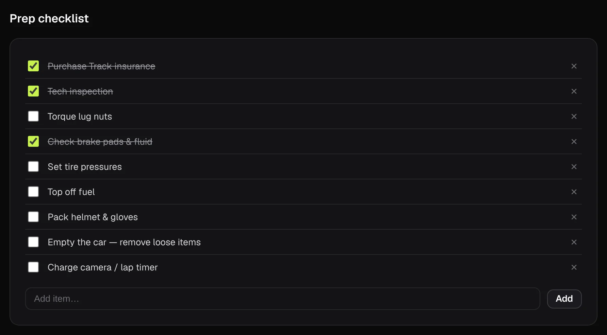

Track-day prep checklist
Most things that spoil a track day were knowable a week earlier: pads that were nearly gone, a helmet left in the hall, a tech form nobody signed. This checklist is ordered by when each item has to happen.
The week before
- Read the event's requirements and book any inspection it asks for.
- Brake pads. Measure the friction material, inner and outer. If a set will not comfortably last the day, change it now.
- Brake fluid. Fresh enough for your organizer's rule, and clear. A soft pedal at the last event means bleed it before this one.
- Tires. Tread above the wear bars, no cords, cuts or bulges, and not too old.
- Fluids and leaks. Oil at the full mark, coolant topped up, nothing dripping. A car that leaks is sent home.
- Wheel bearings, belts and hoses. A quick look and a shake of each wheel.
- Track-day insurance, if you are buying it. It has to be in place before the event.
- Battery tie-down and anything loose under the hood.
The night before
Pack:
- Helmet, and gloves and closed shoes if you use them. Long sleeves and trousers if your organizer requires them.
- Driver's license and your registration confirmation.
- Tire pressure gauge and torque wrench with the right socket.
- A litre of engine oil, brake fluid, glass cleaner and paper towels.
- Painter's tape for numbers, and a few basic tools.
- Water, food, sunscreen, a hat, a folding chair, and rain gear.
- Camera or lap timer, charged, with a clear memory card.
And on the car:
- Fill the fuel tank.
- Torque the wheel nuts to the manufacturer's figure.
- Sleep. It is a long day of concentrating.
At the circuit
- Empty the car. Floor mats, the glovebox, the door pockets, the trunk. Anything loose becomes a projectile, or ends up under the brake pedal.
- Set tire pressures cold, before the first session.
- Check the wheel nuts again.
- Put your numbers on and go through tech inspection.
- Attend the drivers' meeting. Flags, passing zones and pit entry are different at every event.
- Start your camera or lap recording before you join the grid, not on it.
Between sessions
- Read the tire pressures as soon as you stop, and bleed down to your target.
- Leave the parking brake off while the brakes are hot; leave the car in gear or chock a wheel.
- Look at the tires and under the car for anything new.
- Check fuel. Running low in a long corner can starve the engine.
- Drink water and write down what you noticed while it is fresh.
Before you drive home
- Let the tires cool and put road pressures back in.
- Check the wheel nuts once more.
- Look at the pads and tires and note what is left.
- Take the numbers off and repack what you emptied out.
The checklist in Track Evolution
Every upcoming event in Track Evolution carries a prep checklist. Tick items off as you pack, and the countdown card for your next event shows how far through you are. The default list is track insurance, tech inspection, wheel nuts, brake pads and fluid, tire pressures, fuel, helmet and gloves, emptying the car, and charging the camera or lap timer.

To change the list, add, remove and reorder items in Settings, under Prep checklist. Every new event starts from your version, and a checklist you have already started keeps what you ticked. The list is saved to your account, so the phone and the browser show the same one, and it works without signal.
Prep checklists are free. With Pro, the next event also names the part on that car closest to needing replacement, from the garage's wear tracking.